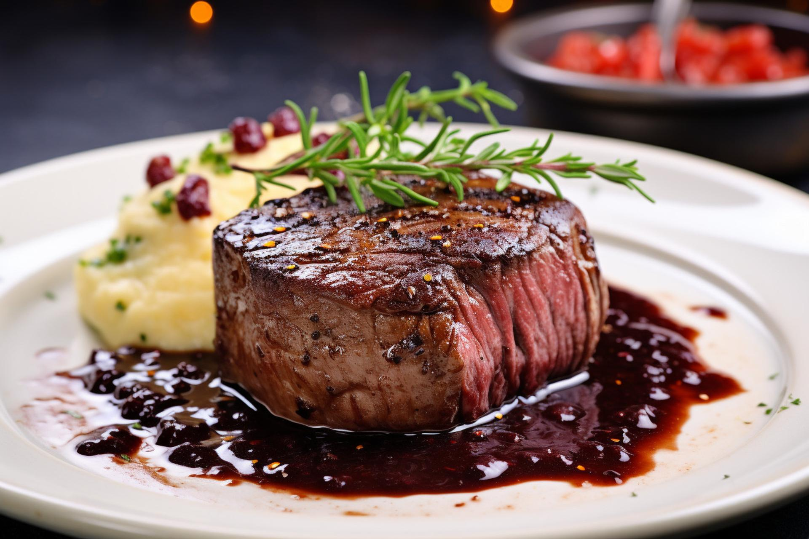
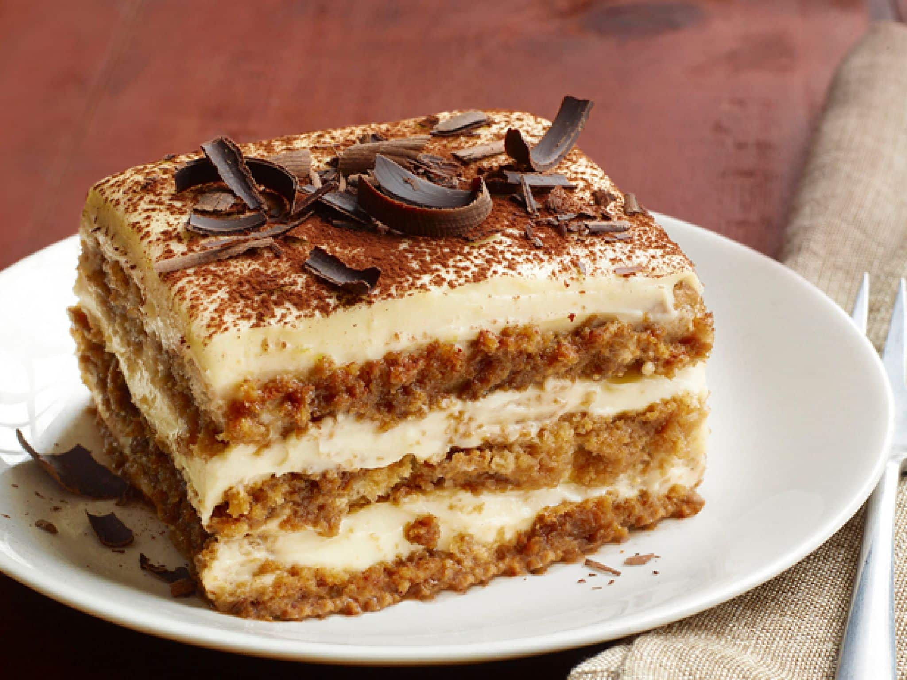

Pratos Principais
| Prato | Descrição | Preço |
|---|---|---|
| Spaghetti alla Carbonara | Massa italiana com ovos, queijo pecorino, pancetta e pimenta preta. | R$ 45,00 |
| Lasagna alla Bolognese | Camadas de massa fresca, molho bolonhesa, molho bechamel e queijo parmesão. | R$ 50,00 |
| Risotto ai Funghi | Arroz arbóreo cremoso com cogumelos frescos e um toque de trufa. | R$ 55,00 |
| Pizza Margherita | Molho de tomate, mussarela fresca, manjericão e azeite de oliva. | R$ 40,00 |
| Gnocchi al Pesto | Nhoque de batata artesanal com molho pesto de manjericão e nozes. | R$ 48,00 |
Sugestões do Chef
- Filetto di Manzo (Filé Mignon ao molho de vinho tinto)
- Ravioli di Zucca (Ravióli de abóbora com manteiga e sálvia)
- Tiramisù (Clássica sobremesa italiana)


Visite nosso Instagram para ver mais delícias!